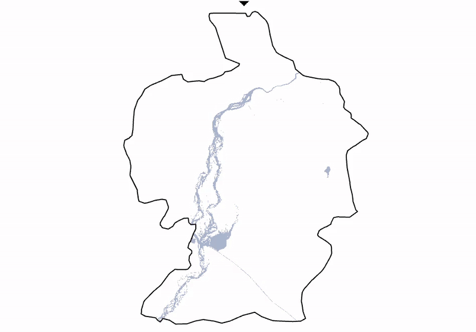

Flood Extent Mapping & Monitoring
Leveraging remote sensing for flood extent detection using SAR and MODIS

Project Details
In this project, I explored different tools and methods for flood extent detection using the recent flood devastation in Pakistan as my case study. I focused on two approaches: SAR and MODIS.
For the SAR analysis, I worked with Sentinel-1 imagery in both Google Earth Engine and Python. Using thresholding and change detection techniques, I was able to map flood extent, taking advantage of SAR’s ability to see through clouds and capture water dynamics during extreme weather.
To complement this, I also explored MODIS imagery through NASA Worldview, which provided a broader temporal perspective and valuable visual context, despite its limitations under cloud cover. Through this study, I learned how combining radar and optical based approaches can give a more complete picture of flood events, and how open-source satellite data and platforms can support rapid flood mapping for disaster response.